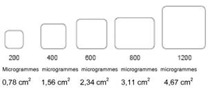
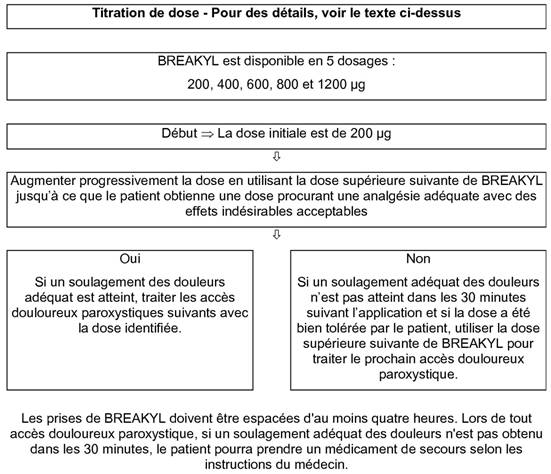
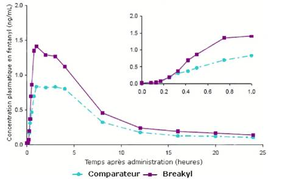

RÉSUMÉ DES CARACTÉRISTIQUES DU PRODUIT
ANSM - Mis à jour le : 07/12/2012
BREAKYL START, film orodispersible
2. COMPOSITION QUALITATIVE ET QUANTITATIVE
Un film orodispersible contient:
200 microgrammes de fentanyl (sous forme de citrate)
ou 400 microgrammes de fentanyl (sous forme de citrate)
ou 600 microgrammes de fentanyl (sous forme de citrate)
ou 800 microgrammes de fentanyl (sous forme de citrate)
Excipients:
|
|
BREAKYL 200 µg |
BREAKYL 400 µg |
BREAKYL 600 µg |
BREAKYL 800 µg |
|
|
Propylèneglycol (E1520) |
0,17 mg |
0,35 mg |
0,52 mg |
0,70 mg |
|
|
Benzoate de sodium (E211) |
0,11 mg |
0,23 mg |
0,34 mg |
0,46 mg |
|
|
Parahydroxybenzoate de méthyle (E218) |
0,12 mg |
0,24 mg |
0,36 mg |
0,48 mg |
|
|
Parahydroxybenzoate de propyle (E216) |
0,03 mg |
0,06 mg |
0,09 mg |
0,12 mg |
Pour la liste complète des excipients, voir rubrique 6.1.
Film orodispersible.
BREAKYL est un film orodispersible soluble, rectangulaire, plat et souple à deux faces, l'une rose et l'autre blanche, conçu pour permettre un passage direct de fentanyl dans la circulation sanguine. La face rose contient la substance active (fentanyl). La face blanche permet de minimiser la libération du fentanyl dans la salive afin d'éviter la déglutition de la substance active.
Les schémas suivants montrent les tailles des dosages disponibles de BREAKYL:

(Les dimensions peuvent ne pas apparaître correctes en lecture électronique).
Chaque film orodispersible est scellé individuellement dans un sachet avec sécurité enfant.
4.1. Indications thérapeutiques
BREAKYL est indiqué pour le traitement des accès douloureux paroxystiques (ADP) chez les patients adultes ayant un cancer et recevant déjà un traitement de fond opioïde pour des douleurs chroniques d'origine cancéreuse.
Un accès douloureux paroxystique est une exacerbation passagère d'une douleur chronique par ailleurs contrôlée par un traitement de fond.
Les patients sous traitement de fond opioïde sont ceux prenant au moins 60 mg de morphine orale par jour, au moins 25 microgrammes de fentanyl transdermique par heure, au moins 30 mg d'oxycodone par jour, au moins 8 mg d'hydromorphone par voie orale par jour ou une dose équi-analgésique d'un autre opioïde pendant une durée d'au moins une semaine.
4.2. Posologie et mode d'administration
Le traitement doit être instauré et suivi par un médecin ayant l'expérience de la prise en charge des traitements opioïdes chez les patients atteints de cancer. Afin de réduire au minimum les risques d'effets indésirables liés aux opioïdes et de déterminer la dose « efficace », il est indispensable que les patients soient étroitement surveillés par des professionnels de santé durant la phase de titration.
La dose efficace de BREAKYL pour le traitement d'accès douloureux paroxystiques d'origine cancéreuse doit être déterminée par titration de dose, car elle ne peut pas être prédite à partir de la dose quotidienne du traitement de fond opioïde ou d'un autre médicament destiné au traitement de ces accès.
Titration de la dose
Les douleurs chroniques des patients doivent être contrôlées par un traitement de fond opioïde avant le début de la phase de titration avec BREAKYL. Chez les patients présentant plus de quatre épisodes d'accès douloureux paroxystiques par jour, l'augmentation de la dose du traitement de fond opioïde doit être envisagée avant de commencer la titration de BREAKYL.
Titration chez des patients passant d'un autre médicament contenant du fentanyl à BREAKYL
Compte tenu du fait que ces produits possèdent des profils d'absorption différents, la substitution ne doit pas se faire selon un rapport de 1:1. Chez les patients passant d'une autre forme orale de citrate de fentanyl à BREAKYL, la titration de la dose de BREAKYL doit être réalisée indépendamment étant donné que la biodisponibilité entre les produits diffère significativement (voir le graphique à la rubrique 5.2).
Dose initiale:
La dose initiale de BREAKYL doit être de 200 microgrammes, avec augmentation progressive de la posologie si nécessaire conformément à la gamme de dosages disponibles (200, 400, 600, 800 et 1200 microgrammes). Le processus de titration doit être attentivement surveillé jusqu'à l'obtention d'une dose produisant l'effet analgésique adéquat avec des effets indésirables acceptables après la prise d'une seule dose par accès douloureux paroxystique. Cette dose est alors définie comme la dose efficace. Les prises de BREAKYL doivent être espacées d'au moins quatre heures.
Deux présentations de BREAKYL sont disponibles pour la titration de dose:
BREAKYL START, contenant des films orodispersibles dosés chacun à 200, 400, 600 et 800 microgrammes et BREAKYL 200 microgrammes, film orodispersible.
Avec BREAKYL 200 microgrammes, des doses plus élevées peuvent être obtenues en appliquant simultanément plusieurs unités de BREAKYL 200 microgrammes, film orodispersible:
· 1 film orodispersible de BREAKYL 200 est égal à une dose de 200 microgrammes
· 2 films orodispersibles de BREAKYL 200 sont égaux à une dose de 400 microgrammes
· 3 films orodispersibles de BREAKYL 200 sont égaux à une dose de 600 microgrammes
· 4 films orodispersibles de BREAKYL 200 sont égaux à une dose de 800 microgrammes.
Si le dosage le plus élevé de BREAKYL START (800 microgrammes) ou l'application simultanée de 4 films orodispersibles de BREAKYL 200 microgrammes (soit 800 microgrammes) ne soulage pas suffisamment les douleurs, BREAKYL 1200 peut être indiqué. Il s'agit du dosage le plus élevé disponible de BREAKYL.
Si le soulagement des douleurs est adéquat après la prise d'un dosage particulier, les accès douloureux paroxystiques suivants doivent être traités en utilisant la dose de BREAKYL qui a été identifiée.
Si le soulagement des douleurs n'est pas adéquat dans les 30 minutes suivant l'application d'une dose particulière de BREAKYL, et si cette dose a été bien tolérée par le patient, il devra prendre la dose supérieure suivante de BREAKYL afin de traiter le prochain accès douloureux paroxystique.
Si le soulagement des douleurs n'est pas adéquat dans les 30 minutes suivant l'application de BREAKYL 1 200 microgrammes film orodispersible (dosage le plus élevé disponible), le patient devra discuter des autres options thérapeutiques avec son médecin. L'utilisation d'une combinaison de plusieurs films orodispersibles à dose faible pour atteindre la dose supérieure suivante est possible au cours de la phase de titration. L'utilisation d'une dose combinée totale excédant 1200 microgrammes n'a pas été évaluée dans des conditions contrôlées.
Au cours d'une période d'accès douloureux paroxystiques, si un soulagement adéquat n'est pas obtenu dans les 30 minutes suivant l'application d'un film orodispersible de BREAKYL, le patient pourra utiliser des médicaments de secours pour les accès douloureux paroxystiques, s'ils ont été prescrits par son médecin. Le patient ne devra cependant pas prendre les médicaments opioïdes de secours lorsque des effets indésirables non acceptables de BREAKYL ou des signes de toxicité des opioïdes ont été notés.

Traitement d'entretien
Quand la dose efficace est déterminée, l'utilisation de BREAKYL doit être limitée à quatre périodes d'accès douloureux paroxystiques ou moins par jour, et les doses doivent être séparées d'au moins quatre heures. BREAKYL ne doit être utilisé qu'une seule fois par épisode.
Ajustement de la dose
L'ajustement de la dose de BREAKYL ou de celle du traitement de fond de l'analgésique opioïde (sur 24 heures) peut être nécessaire chez certains patients afin de continuer à procurer un soulagement adéquat des accès douloureux paroxystiques. Une augmentation de la dose de l'opioïde administré sur 24 heures pour le traitement des douleurs persistantes doit être envisagée chez les patients ayant quotidiennement plus de quatre périodes d'accès douloureux paroxystiques sur une période de plus de quatre jours consécutifs. En cas d'augmentation de la dose d'opioïde d'action prolongée, il peut être nécessaire de réévaluer la dose de BREAKYL utilisée pour traiter les accès douloureux paroxystiques.
Toute nouvelle titration de la dose d'un analgésique doit être impérativement suivie par un médecin.
Arrêt du traitement
Dans la mesure où les patients continuent à prendre leur traitement opioïde de fond pour les douleurs chroniques, le traitement par BREAKYL peut généralement être immédiatement arrêté s'il n'est plus requis pour traiter uniquement les accès douloureux paroxystiques.
Chez les patients nécessitant l'arrêt de tous les traitements opioïdes, le protocole d'arrêt progressif des opioïdes doit tenir compte de la dose de BREAKYL afin d'éviter l'apparition de symptômes de sevrage brutal.
Application de BREAKYL
Le patient doit:
· ouvrir le sachet de BREAKYL immédiatement avant emploi selon les instructions indiquées sur le sachet;
· utiliser sa langue pour humidifier l'intérieur de sa joue ou se rincer la bouche à l'eau afin d'humecter la zone d'application de BREAKYL;
· avec les mains sèches, prendre le film orodispersible de BREAKYL entre l'index et le pouce avec la face rose du côté du pouce;
· placer le film orodispersible de BREAKYL dans la bouche, de telle façon que la face rose soit en contact uniforme avec la muqueuse interne de sa joue;
· appuyer et le maintenir en place pendant au moins 5 secondes jusqu'à ce qu'il adhère fermement; la face blanche doit être ensuite visible.
Le film orodispersible de BREAKYL doit rester en place de lui-même après cette période. Le patient peut boire au bout de 5 minutes.
La dissolution d'un film orodispersible de BREAKYL est habituellement complète dans les 15 à 30 minutes suivant l'application. Dans certains cas, la dissolution complète du produit peut prendre plus de 30 minutes, mais cela n'affecte pas l'absorption du fentanyl. Il faudra demander au patient d'éviter de toucher le film orodispersible avec sa langue ou ses doigts et d'éviter de manger jusqu'à ce que le film orodispersible soit dissout.
Si un film orodispersible de BREAKYL est mâché et dégluti, les concentrations maximales et la biodisponibilité pourraient être inférieures à celles obtenues lors d'une utilisation conforme aux instructions (voir rubrique 5.2).
Utilisation chez l'enfant et l'adolescent
BREAKYL n'est pas recommandé chez l'enfant et l'adolescent de moins de 18 ans en raison du manque de données concernant la sécurité et l'efficacité.
Utilisation chez le sujet âgé
Les patients âgés sont plus sensibles aux effets du fentanyl par voie intraveineuse que des sujets plus jeunes. Chez le sujet âgé, le fentanyl est plus lentement éliminé et sa demi-vie terminale d'élimination est plus longue, ce qui peut entraîner une accumulation de la substance active et accroître le risque d'effets indésirables. La titration de la dose doit donc être effectuée de façon particulièrement prudente. Les études cliniques n'ont cependant pas montré de différence de la dose moyenne de BREAKYL obtenue après titration entre des patients âgés de ≥ 65 ans et des patients de moins de 65 ans.
Populations particulières
La titration doit être effectuée avec prudence chez les patients présentant des troubles de la fonction rénale ou hépatique.
Les patients présentant une mucite de grade 1 doivent être étroitement surveillés; une adaptation de la dose peut être envisagée. L'efficacité et la sécurité de BREAKYL n'ont pas été étudiées chez des patients présentant une mucite de sévérité supérieure au grade 1.
Le film orodispersible ne doit pas être utilisé si le sachet a été endommagé avant son ouverture.
· Hypersensibilité au fentanyl ou à l'un des excipients (voir rubrique 6.1).
· Administration conjointe d'un inhibiteur de la monoamine oxydase (IMAO), ou dans les deux semaines suivant l'arrêt d'utilisation d'un IMAO (voir également rubrique 4.5).
· Dépression respiratoire sévère ou obstruction sévère des voies aériennes.
· Patients non traités par un traitement de fond opioïde (voir rubrique 4.1) en raison d'un risque accru de dépression respiratoire.
4.4. Mises en garde spéciales et précautions d'emploi
Il est impératif d'informer les patients et les soignants que BREAKYL contient une substance active à une dose qui peut être mortelle pour un enfant; Ils doivent donc toujours conserver constamment BREAKYL hors de la portée et de la vue des enfants et des personnes non concernées par le traitement.
Afin de réduire au minimum les risques d'effets indésirables liés aux opioïdes et de déterminer la dose efficace, il est indispensable que les patients soient étroitement surveillés par un médecin durant la phase de titration.
Il est important de s'assurer que le traitement de fond opioïde utilisé pour traiter les douleurs chroniques du patient a été stabilisé avant d'amorcer un traitement par BREAKYL.
L'utilisation de BREAKYL est associée à un risque de dépression respiratoire cliniquement significative. La prudence est de rigueur lors de la titration de BREAKYL chez des patients présentant une bronchopneumopathie chronique obstructive non sévère ou toute autre pathologie les prédisposant à une dépression respiratoire, car même administré aux doses thérapeutiques normales, BREAKYL peut aggraver les troubles respiratoires jusqu'à entraîner une insuffisance respiratoire.
BREAKYL ne doit être administré qu'avec une extrême prudence chez les patients qui pourraient être particulièrement sensibles aux effets cérébraux de l'hypercapnie, par exemple chez les patients présentant des signes d'hypertension intracrânienne ou des troubles de la conscience. Les opioïdes pouvant masquer l'évolution clinique en cas de traumatisme crânien, ils ne doivent être utilisés dans ce cadre qu'en cas de nécessité clinique.
Administré par voie intraveineuse, le fentanyl peut provoquer une bradycardie. BREAKYL doit donc être utilisé avec prudence chez les patients présentant une bradyarythmie.
Le traitement par BREAKYL doit être envisagé avec prudence en cas d'hypovolémie ou d'hypotension.
En outre, BREAKYL doit être administré avec prudence chez les patients présentant une insuffisance hépatique ou rénale. L'influence d'une insuffisance hépatique ou rénale sur la pharmacocinétique du fentanyl n'a pas été étudiée. Cependant, lors de l'administration intraveineuse, la clairance du fentanyl est modifiée par l'insuffisance hépatique ou rénale en raison d'une altération de la clairance métabolique et de la liaison aux protéines plasmatiques. Après administration de BREAKYL, l'insuffisance hépatique ou rénale peut d'une part augmenter la biodisponibilité du fentanyl et d'autre part diminuer sa clairance systémique, ce qui pourrait entraîner des effets opioïdes accrus et prolongés. Une prudence particulière est donc de rigueur lors de la phase de titration chez les patients présentant une insuffisance hépatique ou rénale modérée à sévère.
Une accoutumance et une dépendance physique et/ou psychologique sont susceptibles d'apparaître lors de l'administration répétée d'opioïdes tels que le fentanyl. Cependant une addiction iatrogène est rare dans le cadre de l'utilisation thérapeutique des opioïdes.
Le fentanyl contenu dans BREAKYL peut entraîner la positivité d'un contrôle antidopage.
BREAKYL contient du benzoate de sodium, du parahydroxybenzoate de méthyle, du parahydroxybenzoate de propyle et du propylèneglycol. Le benzoate de sodium est légèrement irritant pour la peau, les yeux et les muqueuses. Le parahydroxybenzoate de méthyle et le parahydroxybenzoate de propyle peuvent provoquer des réactions allergiques (pouvant être retardées). Le propylèneglycol peut provoquer une irritation cutanée.
Les patients présentant une mucite de grade 1 doivent être étroitement surveillés, une adaptation de la dose peut être envisagée. L'efficacité et la sécurité de BREAKYL n'ont pas été étudiées chez les patients présentant une mucite de sévérité supérieure au grade 1 (voir également rubriques 4.2 et 5.2).
4.5. Interactions avec d'autres médicaments et autres formes d'interactions
Compte tenu qu'une potentialisation sévère et imprévisible des effets opioïdes a été rapportée lors de l'administration concomitante d'inhibiteurs de la monoamine oxidase (IMAO) et d'analgésiques opioïdes, BREAKYL ne doit pas être administré aux patients recevant ou ayant reçu des inhibiteurs de la monoamine oxydase (IMAO) dans les 14 jours précédant la prise de BREAKYL (voir rubrique 4.3).
Le fentanyl est métabolisé par l'isoenzyme CYP3A4 dans le foie et la muqueuse intestinale (voir également rubrique 5.2).
Les inhibiteurs de l'isoenzyme CYP3A4 tels que:
· antibiotiques macrolides (par exemple érythromycine, clarithromycine, télithromycine),
· antifongiques azolés (par exemple kétoconazole, itraconazole et fluconazole),
· certaines antiprotéases (par exemple ritonavir, indinavir, nelfinavir, saquinavir),
· antagonistes calciques (par exemple diltiazem ou vérapamil),
· antiémétiques (par exemple aprepitant ou dronabinol),
· antidépresseurs (par exemple fluoxétine),
· antiacides (par exemple cimétidine).
ou la caféine et l'alcool peuvent augmenter la biodisponibilité du fentanyl dégluti et également diminuer sa clairance systémique, ce qui peut augmenter ou prolonger les effets opioïdes et induire une dépression respiratoire potentiellement fatale. Des effets similaires pourraient être observés après prise concomitante de jus de pamplemousse, inhibiteur connu du CYP3A4. La prudence est donc de rigueur quand le fentanyl est administré de façon concomitante avec les inhibiteurs du CYP 3A4. Les patients recevant BREAKYL et débutant un traitement par un inhibiteur du CYP3A4 ou chez qui la dose d'inhibiteur du CYP3A4 est augmentée doivent faire l'objet d'une surveillance étroite en vue de suivre l'apparition de signes de toxicité des opioïdes pendant une période prolongée.
L'administration concomitante de BREAKYL et d'inducteurs puissants du CYP3A4 tels que:
· barbituriques et autres sédatifs (par exemple phénobarbital),
· antiépileptiques (par exemple carbamazépine, phénytoïne, oxcarbazépine),
· certains antiviraux (par exemple éfavirenz, névirapine),
· anti-inflammatoires ou immunosuppresseurs (par exemple glucocorticoïdes),
· antidiabétiques (par exemple pioglitazone),
· antibiotiques antituberculeux (par exemple rifabutine, rifampine),
· psychotropes (par exemple modafinil),
· antidépresseurs (par exemple millepertuis),
ou la nicotine et l'alcool peut entraîner une diminution des concentrations plasmatiques du fentanyl, ce qui pourrait diminuer l'efficacité de BREAKYL. Les patients recevant BREAKYL chez qui un traitement par un inducteur de la CYP3A4 est arrêté ou poursuivi à plus basse posologie doivent être suivis à la recherche d'une augmentation de l'activité ou d'une toxicité de BREAKYL, dont la dose doit alors être adaptée en conséquence.
L'administration concomitante de BREAKYL et d'autres dépresseurs du SNC (incluant autres opioïdes, sédatifs ou hypnotiques, anesthésiques généraux, phénothiazines, tranquillisants, myorelaxants, antihistaminiques sédatifs ou alcool) peut potentialiser les effets dépresseurs du SNC de chaque produit.
Des symptômes de sevrage peuvent survenir chez les patients traités par BREAKYL après l'administration d'antagonistes de la morphine (comme la naloxone) ou d'analgésiques agonistes partiels (exemples: pentazocine, butorphanol, buprénorphine, nalbuphine).
Il n'existe pas de données suffisamment pertinentes concernant l'utilisation de fentanyl chez la femme enceinte. Les études effectuées chez l'animal ont mis en évidence une toxicité sur la reproduction (voir rubrique 5.3). Le risque potentiel chez l'homme n'est pas connu. Le fentanyl ne doit pas être utilisé pendant la grossesse à moins d'une nécessité absolue.
Un traitement prolongé au cours de la grossesse est associé à un risque de symptômes de sevrage chez le nouveau-né.
Il est recommandé de ne pas utiliser le fentanyl pendant le travail et l'accouchement (y compris en cas de césarienne), car le fentanyl franchit la barrière placentaire et peut entraîner une dépression respiratoire chez le fœtus. En cas d'administration de BREAKYL, un antidote pour l'enfant doit être immédiatement disponible.
Le fentanyl est excrété dans le lait maternel et peut provoquer une sédation et une dépression respiratoire chez le nourrisson allaité. Le fentanyl ne doit pas être utilisé pendant l'allaitement, et celui-ci ne doit pas reprendre moins de 48 heures après la dernière administration du fentanyl.
4.7. Effets sur l'aptitude à conduire des véhicules et à utiliser des machines
Les effets sur l'aptitude à conduire des véhicules et à utiliser des machines n'ont pas été étudiés.
Toutefois les analgésiques opioïdes sont susceptibles d'altérer les capacités mentales et/ou physiques nécessaires à la réalisation de tâches potentiellement dangereuses (comme la conduite d'un véhicule ou l'utilisation de machines). Il est recommandé aux patients de ne pas conduire un véhicule ou utiliser de machines s'ils éprouvent de la somnolence, des étourdissements ou une vision trouble ou double pendant le traitement par BREAKYL.
Les effets indésirables attendus avec BREAKYL sont les effets indésirables typiques des opioïdes. Le plus souvent, ces effets cesseront ou diminueront d'intensité avec la poursuite du traitement une fois la titration effectuée de façon à définir la dose appropriée. Cependant, les effets indésirables les plus graves associés à tous les opioïdes, dont BREAKYL, sont la dépression respiratoire (pouvant entraîner un arrêt respiratoire), la dépression circulatoire, l'hypotension et l'état de choc; l'apparition éventuelle de ces effets indésirables doit être étroitement surveillée chez tous les patients.
Les études cliniques menées avec BREAKYL ayant pour but d'évaluer l'efficacité et la sécurité de ce médicament dans le traitement des accès douloureux paroxystiques d'origine cancéreuse, les patients inclus recevaient en même temps d'autres opioïdes (morphine à libération prolongée, oxycodone à libération prolongée ou fentanyl par voie transdermique) pour traiter leurs douleurs chroniques. Par conséquent, il n'est pas possible d'isoler avec certitude les effets indésirables dus au seul traitement par BREAKYL.
Les données sur les effets indésirables présentées ici ont été observées d'une part lors de l'expérience acquise avec BREAKYL dans le traitement des accès douloureux paroxystiques, avec administration conjointe d'un opioïde pour le traitement des douleurs chroniques. D'autre part, les événements indésirables mentionnés comme très rares ont été précédemment associés au fentanyl, mais n'ont pas été observés à ce jour lors des études cliniques avec BREAKYL. Aucune tentative de correction en fonction de l'administration conjointe d'un autre opioïde, de la durée du traitement par BREAKYL ou des troubles liés au cancer n'a été effectuée.
Les effets indésirables les plus fréquemment observés ont été les nausées, la somnolence et des vertiges.
La fréquence des effets indésirables est évaluée de la façon suivante: très fréquent (≥ 1/10), fréquent (≥ 1/100 à < 1/10), peu fréquent (≥ 1/1000 à < 1/100), rare (≥ 1/10 000 à < 1/1 000), très rare (< 1/10 000), inconnue (ne peut être estimée sur la base des données disponibles).
Les événements indésirables considérés comme liés de façon au moins possible au traitement ont été les suivants:
Troubles du métabolisme et de la nutrition
Peu fréquent: anorexie.
Affections psychiatriques
Fréquent: syndrome confusionnel.
Peu fréquent: anxiété, hallucinations, délires, rêves inhabituels, nervosité, insomnie, agitation.
Très rare: troubles de la pensée, dépersonnalisation, dépression, labilité émotionnelle, euphorie.
Affections du système nerveux
Fréquent: somnolence, vertiges, céphalées, sédation.
Peu fréquent: dysgueusie, léthargie, amnésie, troubles cognitifs.
Très rare: myoclonies, paresthésies (dont hyperesthésies/paresthésies péribuccales), anomalie de la démarche/incoordination.
Affections oculaires
Fréquent: vision anormale (vision floue, diplopie).
Affections vasculaires
Peu fréquent: bouffée de chaleur.
Très rare: vasodilatation.
Affections respiratoires, thoraciques et médiastinales
Peu fréquent: dépression respiratoire, congestion sinusale.
Très rare: dyspnée.
Affections gastro-intestinales
Fréquent: nausée, constipation, vomissements, sécheresse buccale.
Peu fréquent: diarrhée, stomatite, gingivorragie, dyspepsie, ulcération buccale, douleur buccale, dysphagie.
Très rare: douleurs abdominales, flatulences, augmentation du volume de l'abdomen.
Affections de la peau et du tissu sous-cutané
Fréquent: prurit.
Peu fréquent: hyperhidrose, augmentation d'une tendance aux ecchymoses.
Très rare: éruption.
Affections musculo-squelettiques et systémiques
Peu fréquent: contractions musculaires, arthralgie, faiblesse musculaire, douleurs musculo-squelettiques, douleurs des membres, douleurs maxillaires.
Affections du rein et des voies urinaires
Peu fréquent: incontinence urinaire.
Très rare: rétention urinaire.
Troubles généraux et anomalies au site d'administration
Fréquent: fatigue.
Peu fréquent: asthénie, frissons, pyrexie, soif.
Très rare: malaise.
Investigations
Peu fréquent: augmentation de la pression artérielle.
Lésions, intoxications et complications liées aux procédures
Peu fréquent: blessure accidentelle (par exemple chutes).
Les symptômes attendus en cas de surdosage en BREAKYL sont de même nature que ceux observés après l'administration intraveineuse de fentanyl ou d'autres opioïdes, et résultent de son action pharmacologique. L'effet indésirable le plus grave est la dépression respiratoire.
Les mesures à prendre immédiatement en cas de surdosage opioïde consistent à retirer le film orodispersible de BREAKYL de la bouche du patient s'il s'y trouve encore, s'assurer de la perméabilité des voies respiratoires, effectuer des stimulations physiques et verbales du patient et déterminer son niveau de conscience ainsi que son état ventilatoire et circulatoire, et instaurer si nécessaire une ventilation assistée (assistance respiratoire).
Le traitement d'une ingestion accidentelle chez une personne qui n'a jamais reçu de traitement opioïde nécessite de mettre en place une voie d'abord veineuse et administrer de la naloxone ou un autre antagoniste des opioïdes, selon l'état clinique. La durée de la dépression respiratoire due au surdosage peut être plus longue que les effets de l'antagoniste opioïde (par exemple, la demi-vie de la naloxone est comprise entre 30 et 81 minutes) et il peut donc être nécessaire de répéter l'administration de la naloxone ou d'un autre antagoniste opioïde si nécessaire. Pour plus de détails sur le mode d'emploi de l'antagoniste opioïde utilisé, se référer au Résumé des Caractéristiques du Produit en question.
Pour le traitement d'un surdosage chez des patients recevant un traitement continu par opioïde, mettre en place une voie d'abord veineuse. Dans certains cas, l'utilisation judicieuse de naloxone ou d'autres antagonistes des opioïdes peut être justifiée, mais elle est associée à un risque de déclenchement d'un syndrome de sevrage aigu.
Bien qu'il n'ait jamais été décrit de rigidité musculaire associée à la dépression respiratoire après administration de BREAKYL, un tel phénomène est possible avec le fentanyl ou d'autres opioïdes. Si une telle rigidité musculaire apparaît, il faudra instaurer une ventilation assistée, administrer un antagoniste des opioïdes et, en dernier recours, un curarisant.
5. PROPRIETES PHARMACOLOGIQUES
5.1. Propriétés pharmacodynamiques
Groupe pharmacothérapeutique: analgésiques opioïdes, dérivé de la phénylpipéridine, Code ATC: N02AB03.
Le fentanyl, agoniste morphinomimétique pur, agit essentiellement sur les récepteurs opioïdes µ du cerveau, de la moelle épinière et des muscles lisses. L'effet thérapeutique s'exerce essentiellement au niveau du système nerveux central (SNC). L'analgésie représente l'effet pharmacologique clinique le plus utile résultant de l'interaction du fentanyl avec les récepteurs µ.
Chez des patients atteints de cancer dont les douleurs chroniques étaient contrôlées par des administrations régulières de doses stables d'opioïdes, BREAKYL a significativement diminué l'intensité des douleurs (évaluée par la somme des différences de l'intensité des douleurs) comparativement à un placebo pendant 15, 30, 45 et 60 minutes après l'administration du traitement.
Les effets analgésiques du fentanyl sont corrélés à sa concentration sanguine, en tenant compte du délai de la pénétration dans le SNC et de la sortie de celui-ci (phénomène dont la demi-vie est de 3 à 5 minutes). Chez les sujets n'ayant jamais reçu un traitement opioïde, l'analgésie apparaît à une concentration sanguine de 1 à 2 ng/ml, alors que l'anesthésie chirurgicale et une profonde dépression respiratoire se produiraient à des concentrations de 10 à 20 ng/ml.
Les actions secondaires des opioïdes sont l'augmentation du tonus des muscles lisses gastro-intestinaux et une diminution de leurs contractions, ce qui prolonge la durée du transit intestinal et peut être responsable de la constipation liée aux opioïdes.
Les opioïdes augmentent généralement le tonus des muscles lisses des voies urinaires, mais l'effet global est variable, induisant dans certains cas une miction impérieuse et dans d'autres une dysurie.
Tous les agonistes des récepteurs opioïdes µ, y compris le fentanyl, induisent une dépression respiratoire dose-dépendante. Le risque de dépression respiratoire est moindre chez les patients qui reçoivent un traitement opioïde de fond, car ces patients développent une tolérance à la dépression respiratoire et aux autres effets opioïdes.
5.2. Propriétés pharmacocinétiques
Le fentanyl est une substance très lipophile et peut être absorbé très rapidement par la muqueuse buccale et plus lentement par la voie gastro-intestinale conventionnelle. Il subit un métabolisme par effet de premier passage hépatique et intestinal, mais ses métabolites ne contribuent pas à ses effets thérapeutiques.
Absorption
Une étude pharmacocinétique a montré que le fentanyl était rapidement absorbé après une application gingivale de BREAKYL et que sa biodisponibilité absolue était de 71 %. Cette étude de biodisponibilité absolue a également montré des paramètres pharmacocinétiques similaires entre des sous-groupes de six hommes et six femmes volontaires adultes en bonne santé.
La pharmacocinétique de l'absorption du fentanyl à partir de BREAKYL associe une absorption initiale rapide par la muqueuse gingivale et une absorption plus prolongée du fentanyl dégluti par le tractus gastro-intestinal. Les résultats de l'étude de biodisponibilité absolue ont montré qu'environ 51 % de la dose totale de BREAKYL étaient rapidement absorbés par la muqueuse gingivale et devenaient disponibles sur le plan systémique. Les 49 % restants de la dose totale ont été déglutis avec la salive puis lentement absorbés à partir du tractus gastro-intestinal. Environ un tiers de cette quantité (20 % de la dose totale) a échappé à l'élimination lors du premier passage hépatique et intestinale, et devient disponible sur le plan systémique. De ce fait, la biodisponibilité absolue observée de 71 % de BREAKYL est répartie entre une absorption transmuqueuse rapide et une absorption digestive plus lente. Si un film orodispersible de BREAKYL est mâché et dégluti, les concentrations maximales et la biodisponibilité seront probablement inférieures à celles obtenues lors d'une utilisation conforme aux instructions.
Une proportionnalité à la dose a été démontrée sur la totalité de l'étendue des dosages disponibles de BREAKYL (200 à 1200 microgrammes). Après administration d'un seul film orodispersible de BREAKYL (200 à 1200 microgrammes), la Cmax moyenne était de 0,38 à 2,19 ng/ml (en fonction de la dose) et la Tmax de 45 à 240 minutes (médiane: 60 min). L'application de BREAKYL sur un site actif de mucite (grade 1) dans un groupe de patients atteints de cancer a été associée à des diminutions de la Cmax et l'ASCinf. Il est recommandé de surveiller étroitement les patients présentant une mucite de grade 1; une adaptation de la dose peut être envisagée. L'efficacité et la sécurité de BREAKYL n'ont pas été étudiées chez des patients présentant une mucite de sévérité supérieure au grade 1.

Concentrations plasmatiques moyennes en fentanyl en fonction du temps (24 heures et première heure uniquement [graphe en haut et à droite]) après des doses uniques de 800 mcg de BREAKYL ou de 800 mcg d'un produit de comparaison (fentanyl comprimé avec applicateur buccal) chez des volontaires sains.
Distribution
Le fentanyl est très lipophile. Des études menées chez l'animal ont montré qu'après avoir été absorbé, le fentanyl est distribué rapidement au niveau du cerveau, du cœur, des poumons, des reins et de la rate, puis est redistribué plus lentement vers les muscles et les tissus adipeux. Le taux de liaison du fentanyl aux protéines plasmatiques est de 80 à 85 %. La principale protéine de liaison est l'alpha-1 glycoprotéine acide, mais l'albumine et les lipoprotéines sont également impliquées, dans une certaine mesure. La fraction libre du fentanyl augmente en cas d'acidose. Le volume moyen de distribution à l'état d'équilibre (VEE) est de 4 l/kg.
Biotransformation
Le fentanyl est métabolisé en norfentanyl dans le foie et la muqueuse intestinale sous l'effet de l'isoenzyme 3A4 du cytochrome P450. Lors des expérimentations animales, le norfentanyl n'a pas montré d'effet pharmacologique. Le fentanyl est principalement éliminé (plus de 90 % de la dose) par biotransformation en métabolites N-désalkylés et hydroxylés inactifs.
Elimination
Moins de 7 % de la dose sont excrétés sous forme inchangée dans les urines et environ 1 % est excrété sous forme inchangée dans les fèces. Les métabolites sont essentiellement excrétés par voie urinaire, l'excrétion fécale étant moins importante. La clairance plasmatique totale du fentanyl est de 0,5 l/h/kg (valeurs: 0,3 à 0,7 l/h/kg). La demi-vie cliniquement pertinente du fentanyl après administration de BREAKYL est d'environ sept heures et la demi-vie terminale d'élimination d'environ 14 heures.
5.3. Données de sécurité préclinique
Les données précliniques issues des études conventionnelles de pharmacologie de sécurité, de toxicologie en administration répétée, de génotoxicité et de cancérogénèse n'ont pas mis en évidence de risque particulier pour l'homme.
Les études de toxicité sur le développement embryo-fœtal conduites chez le rat et le lapin n'ont révélé aucune malformation ou modification du développement lorsque le fentanyl était administré pendant la période d'organogenèse. Dans une étude de fertilité et de développement embryonnaire précoce chez le rat, un effet médié par les mâles a été observé à forte dose (300 mcg/kg/jour, voie sous-cutanée), concordant avec les effets sédatifs du fentanyl.
Dans les études de développement pré et post-natal chez le rat, le taux de survie de la descendance était significativement réduit à des doses entraînant une toxicité maternelle sévère. Les effets des doses toxiques maternelles sur la première génération sont: un retard du développement physique, des fonctions sensorielles, des réflexes et du comportement. Ces effets peuvent être des effets indirects de négligence maternelle et/ou de diminution de l'allaitement, ou un effet direct du fentanyl sur les petits.
Les études de cancérogénicité (test alternatif par voie cutanée chez la souris transgénique Tg.AC durant 26 semaines, étude de cancérogénèse par voie sous-cutanée chez le rat durant deux ans) ne montrent pas de résultats suggérant un potentiel oncogène.
Propylèneglycol (E1520), benzoate de sodium (E211), parahydroxybenzoate de méthyle (E218), parahydroxybenzoate de propyle (E216), oxyde de fer rouge (E172), acide citrique anhydre, acétate de tout-rac-alpha-tocophérol, phosphate monosodique anhydre, hydroxyde de sodium, phosphate trisodique anhydre, polycarbophile, hydroxypropylcellulose, hydroxyéthylcellulose, carmellose sodique.
Revêtement:
Benzoate de sodium (E211), parahydroxybenzoate de méthyle (E218), parahydroxybenzoate de propyle (E216), acide citrique anhydre, acétate de tout-rac-alpha-tocophérol, hydroxypropylcellulose, hydroxyéthylcellulose, dioxyde de titane (E171), saccharine sodique, huile essentielle de menthe poivrée.
Sans objet.
2 ans.
6.4. Précautions particulières de conservation
A conserver à une température ne dépassant pas 30°C.
Ne pas mettre au réfrigérateur.
A conserver dans l'emballage extérieur d'origine, à l'abri de l'humidité.
6.5. Nature et contenu de l'emballage extérieur
4 Sachets contenant chacun un film orodispersible à 200, 400, 600 ou 800 microgrammes dans une boîte.
Chaque film orodispersible est individuellement emballé dans un sachet avec sécurité enfant constitué d'un laminé polyacrylonitrile/aluminium/ Poly(téréphtalate d’éthylène)/papier.
4 Sachets contenant chacun un film orodispersible à 200, 400, 600 ou 800 microgrammes dans une boîte.
6.6. Précautions particulières d’élimination et de manipulation
Tout produit non utilisé ou déchet doit être éliminé conformément à la réglementation en vigueur.
7. TITULAIRE DE L’AUTORISATION DE MISE SUR LE MARCHE
MEDA PHARMA
25 BOULEVARD DE L'AMIRAL BRUIX
75016 PARIS
8. NUMERO(S) D’AUTORISATION DE MISE SUR LE MARCHE
· 268 564-0 ou 34009 268 564 0 3 : films orodispersibles (200 + 400 + 600 + 800 microgrammes) en sachet (Polyacrylonitrile/Aluminium/Polyamide/ Papier). Boîte de 4.
9. DATE DE PREMIERE AUTORISATION/DE RENOUVELLEMENT DE L’AUTORISATION
[à compléter par le titulaire]
10. DATE DE MISE A JOUR DU TEXTE
[à compléter par le titulaire]
Sans objet.
12. INSTRUCTIONS POUR LA PREPARATION DES RADIOPHARMACEUTIQUES
Sans objet.
Stupéfiant.
Prescription limitée à 28 jours.
Durée de délivrance limitée à 7 jours.